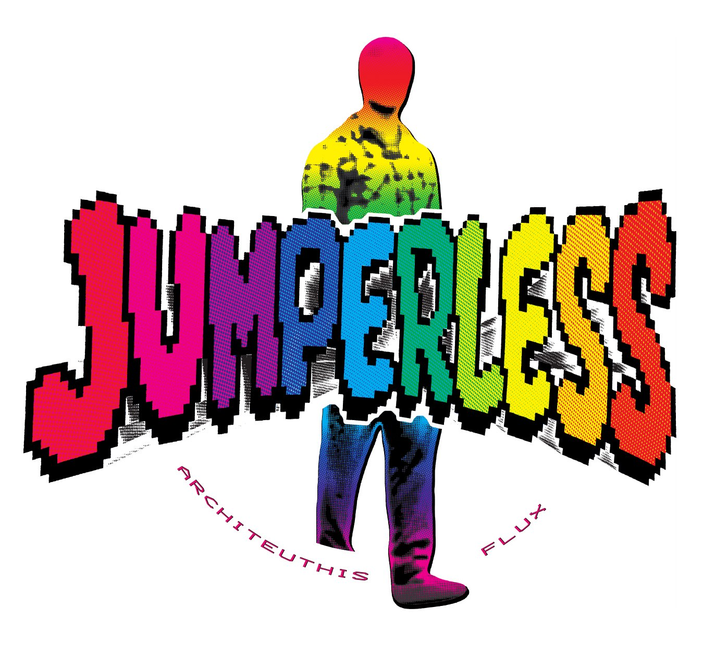
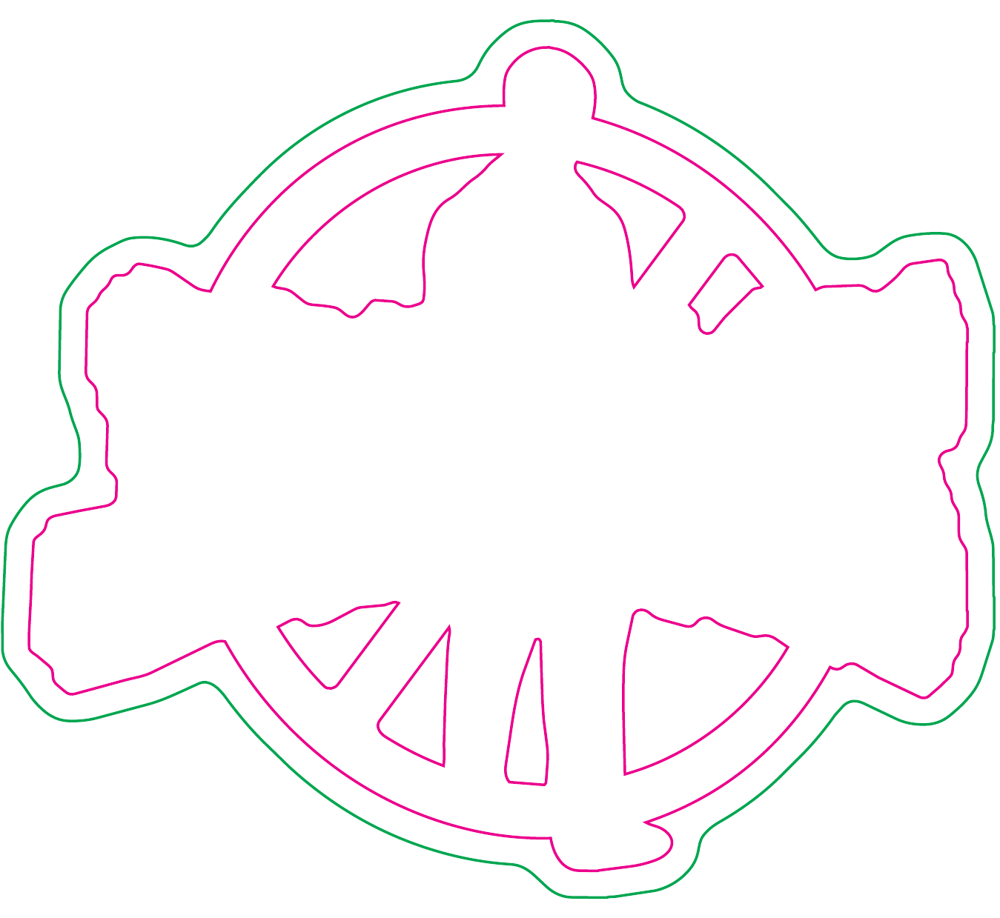
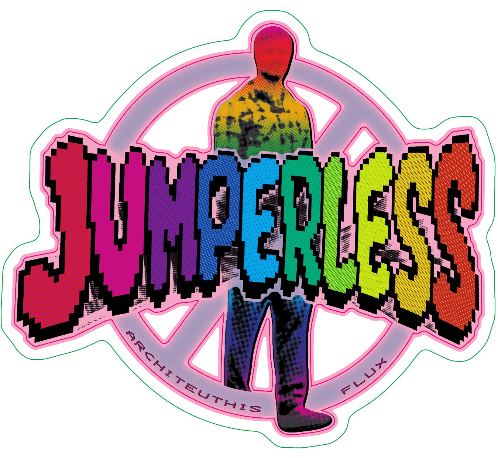

LG-540: white + colour + gloss sticker
How to set up and print lentV64_print.pdf in VersaWorks on the Roland LG-540: white ink under the colour, a raised clear layer on top, then kiss cut and perf cut. 20 November 2026.
The pictures here are rendered from the print file. They are not VersaWorks screenshots. Use them to check that what VersaWorks shows you has the same shapes. Each step links to the Roland manual page that shows the real window.
Menu names are for VersaWorks 7. Where VersaWorks 6 words it differently, that is in [brackets].
What you need
- The file
lentV64_print.pdf. Use that exact file; the older exports have no white or gloss in them as far as VersaWorks is concerned. - The LG-540 loaded with white and gloss ink as well as CMYK.
- VersaWorks with the printer already registered.
- The retroreflective film, loaded the way you load any print-and-cut roll.
1. What is in the file
The PDF has five layers. VersaWorks does not go by the layer names. It goes by the spot colour each layer is painted in, so those names have to be exact.




CutContour (kiss cut), green is PerfCutContour (perf cut).| Layer | Spot colour in the file | What the printer does with it |
|---|---|---|
| CMYK | none, ordinary CMYK | Prints the colour. |
| RDG_WHITE | RDG_WHITE | Prints white ink in that shape. |
| RDG_GLOSS | RDG_GLOSS | Prints gloss ink, more where the picture is darker. |
| CutContour | CutContour | Kiss cut: the sticker outline and the seven holes between the spokes. |
| PerfCutContour | PerfCutContour | Perforated cut through the backing, around the outside. |
Why the white layer matters on this film
The film is retroreflective. Anything left unprinted stays reflective, and colour printed straight onto it still reflects. White ink is opaque, so wherever it prints the reflection is gone. That is why white is a layer of its own: white in the artwork prints nothing, and only RDG_WHITE puts white ink down.
- Bare filmNothing printed. Reflective.
- Colour straight on the filmThe letter fills and the small text. Colour that still reflects.
- White ink onlyThe ring and the border round the lettering. Solid white, not reflective.
- White under colourThe figure, the outlines and the shadows. Ordinary solid colour.
2. Add the file and check VersaWorks read it
- Start VersaWorks, pick the LG-540, and drag
lentV64_print.pdfinto the job list. - Click the job once. In the preview area, under Document Information > Special Items, the markers for white and gloss must both be there.
- Look at the preview. Roland's manuals describe white as pink hatching and gloss as light-blue shading. The shapes should match the picture below.

Roland manual: Printing using white, gloss and other special inks (VersaWorks 7) · same page for VersaWorks 6 · adding a file to the job list
3. Where the print modes are
- Double-click the job to open Settings [Job Settings].
- Open Quality. Three boxes matter: Media Type, Print Quality and Mode.
- The Mode list changes with the Media Type. If you cannot see any white or gloss modes, the Media Type is a plain CMYK one: switch to a type with special effects in its name.
There is no single mode that prints white, colour and raised gloss together. Each mode below does one part, and a layered job (sections 5 and 6) stacks them.
| Mode | What it prints | Usually under Media Type |
|---|---|---|
White -> CMYK(v) | White first, colour on top, in one go. | Generic with special effects |
CMYK(v) | Colour only. | Generic |
White(v) | White only. | Special effects |
MatteVarnish(v) | Gloss ink only, one coat, matte finish. | Special effects |
GlossVarnish(v) | Gloss ink only, one coat, shiny finish. | Special effects |
Embossing(v) | Gloss ink only, built up in several coats for a raised finish. | Special effects |
Wh -> CMYK -> Gl | All three in a single pass. Used by a layered job. | whichever offers it |
Mode names are from Roland's VersaWorks 6 manual and depend on which inks the printer has loaded, so yours may be worded slightly differently. A name ending in 16p is the same mode with more passes: slower and finer.
Roland manual: Quality settings and the full mode list · media types for the LG series as listed in Fiery's LG driver sheet
4. Test on a small piece first
The film is expensive and the gloss takes a long time. Print a strip before the whole sticker.
- Duplicate the job (right-click, Edit Design > Duplicate Job [Duplicate > Duplicate Job]) and rename the copy test. Leave the original alone.
- In the test copy's Settings open Clip and Tile and tick Clip Image. Drag the clip box so it covers part of a letter, a piece of the ring and part of the figure. That puts all four areas from the map in section 1 into the strip.
- In Cut Controls set Operation Mode to Print Only, so the test does not try to cut half an outline.
- Build Run A or Run B below from the test copy. When the strip looks right, build the same thing again from the original for the full print.
Roland manual: Clip Image (VersaWorks 7) · VersaWorks 6
5. Run A: quick check, everything in one pass
This prints white, colour and one thin matte coat of gloss without pulling the film back. There is no height to the gloss. Use it to confirm the white lands where the map says and the layers line up.
The layered job, top row prints last
MatteVarnish(v)CMYK(v)White(v)- Duplicate the job twice so there are three copies: right-click the job, Edit Design > Duplicate Job [Duplicate > Duplicate Job]. Rename them 1 white, 2 colour, 3 gloss.
- Open each copy's Quality settings and set its Mode as in the stack above.
- Select all three (Ctrl-click each), right-click, and choose Generate Layered Job.
- Double-click the new layered job. Tick One Pass Multilayer Printing and answer Yes when it asks to reconfigure the job.
- In Quality, choose the Media Type, the Print Quality and the Mode
Wh -> CMYK -> Gl. In the Layers window, check the order is white, then colour, then gloss on top. Click OK. - Print.
Roland manual: making a layered job · one pass multilayer printing · Roland's three-layer example on the LG · duplicating jobs · the update that added one-pass printing
6. Run B: the real print, raised gloss
White and colour print together, then the printer pulls the film back and builds the gloss up in coats. The height at any point is how dark the gloss picture is there, times the number of coats.
The layered job, top row prints last
Embossing(v), several coatsWhite -> CMYK(v)- Start from the single original job and duplicate it once. Rename the two copies 1 white + colour and 2 gloss.
- Copy 1: set Mode to
White -> CMYK(v). - Copy 2: set Mode to
Embossing(v). Then open Printer Controls, tick Use Custom Settings and set Overprint. The printer lays that many matte coats and then one glossy coat on top. Start with 2 or 3 on the test strip and work up. - Select both copies, right-click, Generate Layered Job. Leave One Pass Multilayer Printing unticked.
- Open the layered job and check 1 white + colour is number 1. The jobs print in number order.
- Set the cutting on the top copy (section 7), then print.
GlossVarnish(v) for copy 2. It lays one coat, so for more height add more gloss copies to the layered job, each set the same way.Roland manual: pullback printing · embossing and the overprint count · how gloss darkness becomes thickness
7. Cutting
- VersaWorks finds the cut lines by their spot colour names:
CutContouris the kiss cut andPerfCutContouris the perforated cut. There is nothing to draw or select. - In Settings open Cut Controls and set Operation Mode to Print & Cut.
- In a layered job only the top copy's cut lines are used. Set Print & Cut on the top copy (the gloss one). Whatever the copies below say about cutting is ignored.
- Use the shop's normal blade force and perf settings for this film, and run a test cut first.
Roland manual: Cut Controls · cut settings explained · test cut and cutting conditions
If something looks wrong
| What you see | Why | What to do |
|---|---|---|
| Special Items shows no white, or no gloss | VersaWorks did not recognise the spot colour name in the file. | Edit > Spot Color Settings: make a library entry that maps the name in the file to the white or gloss ink. Tell Kevin, so the file gets fixed. |
| No white or gloss modes in the Mode list | The Media Type is a CMYK-only one, or the printer is not loaded with those inks. | Change Media Type to one with special effects in its name. |
| No One Pass Multilayer Printing tick box | Older printer firmware or VersaWorks. | Update both, or use Run B. |
| The cut lines print as thin coloured lines | Operation Mode is Print Only, or the top copy of the layered job has no cutting set. | Set Print & Cut on the top copy. |
| The whole sticker reflects, with no solid white ring | The white did not print: the mode used has no white in it. | Check copy 1's Mode and that Special Items shows white. |
| Nothing reflects, even the letters | White printed everywhere: a white plate was generated in VersaWorks instead of using the file's own. | Untick Generate Special Color Plate under Special Color. If VersaWorks lets you tick it at all, it has not recognised the file's white: see the first row. |
| The gloss sits off to one side of the artwork | The film shifted between pullbacks. | Fewer coats, or Run A's single pass. |
Roland manual: assigning white or gloss to a spot colour name · Spot Color Settings walk-through · Special Color settings
Check these on the first run
This guide was written from Roland's manuals and the print file, not at the printer. Four things could not be confirmed and need a look on the real machine:
- The exact Mode names in your list. They depend on which inks are loaded.
- Whether
Embossing(v)is offered on the LG-540 at all. - The per-copy modes for the one-pass job in Run A.
- How many gloss coats give the height wanted on this film.
Write down what worked and pass it back so this page can be corrected.
Built 20 November 2026.